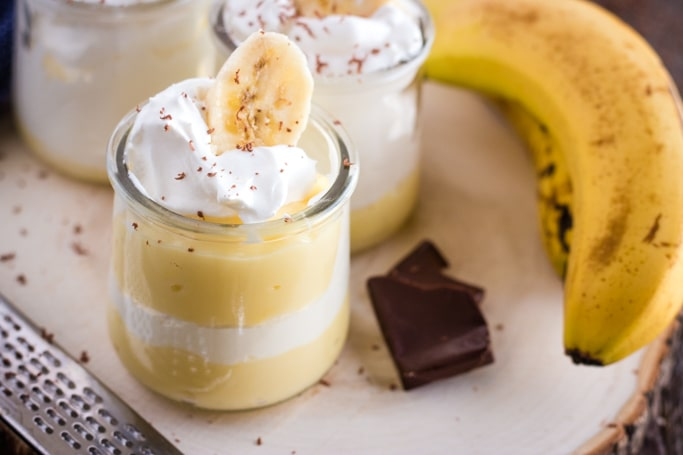
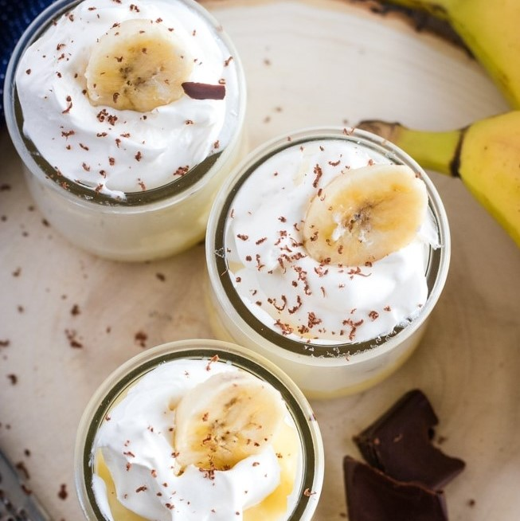

Бананов крем-Парфе

Необходими
продукти:
- 1-2 с.л. царевично нишесте
- 1/2 чаша захар
- 1/4 ч.л. сол
- 1 чаша мляко
- 1 ч.л. екстракт отбанан
- 2 яйца
- 1 с.л. масло
- 2 ч.л. екстракт от ванилия
- 2 унци крема сирене на стайна температура
- 1 1/2 чаши
Декорация:
- Нарязани банани
- Шоколадови стърготини

Начин на
приготвяне:
- В средна тенджера разбийте заедно царевичното нишесте,захарта и солта
- Разбийте сместта с млякото,след това добавете банановия
екстракт,яйцата и маслото
- Загрява се на средна температура,постоянно разбърквайки,докато
съставките
започнат да кипят
- Отстранете от огъня и добавете екстракта от ванилия
- В отделна купа разбийте крема сиренето,докато стане пухкаво
- Оставете ги да се охладяд в хладилника
Декорация:
- Изберете красива чаша
- Добавете на дъното ѝ 2-3 лъжички отпървата смес.
- Направете същото с другата смес
- Редувайте ги ,докато достигнете повърхността на чашата
- Използвайте пош за направата на декорацията с втората смес.
- Украсасете с резенче банан и шоколадовите стърготини